O que são Sockets?
Sockets/Soquetes de um CPU é uma peça de hardware dos computadores que possui um ou mais componentes mecânicos que fornecem conexões elétricas e mecânicas entre o microprocessador e a placa de circuito impresso (PCB no anglicismo), permitindo que se coloque ou retire a Unidade central de processamento (em inglês CPU) sem a necessidade de solda. Os comuns possuem clipes de retenção que aplicam uma força constante que deve ser superada para a instalação do dispositivo. Se há muitos pinos de contato, os soquetes ZIF são utilizados ao exigirem pouca força para a inserção do componente eletrônico. Os Soquetes são geralmente feitos de plástico, possuem uma alavanca ou trinca para garantir a fixação do CPU e, em relação aos citados componentes mecânicos, há algumas variações: os tipos LGA possuem certo número de pinos de contato fixos no PCB e os processadores possuem o mesmo número de entradas, pequenos pontos metálicos, para que seja feita a conexão; os PGA funcionam de maneira oposta, visto que os pinos de contato estão nos microprocessadores; já os BGA são uma variante dos PGA e requerem solda, um trabalho mais especializado e, por isso, são comercialmente pouco referidos.
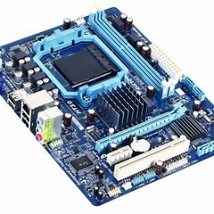
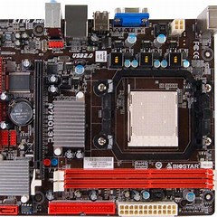
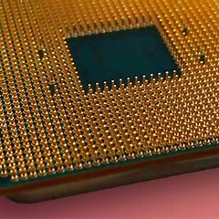
Tanto a AMD como a Intel possuem seus próprios soquetes para encaixar processadores na motherboard. Por isso, quando for comprar um CPU, é importante que o utilizador conheça qual é o encaixe oferecido pela motherboard para não acabar por adquirir um CPU incompatível. E como é óbvio também não podemos misturar componentes de ambas as marcas pois também vai causar problemas de compatibilidade. A AMD tem soquetes específicos para o tipo de máquinas que quero construir/utilizar, nesta página pode ver/verificar os sockets AMD tanto para Desktop(uso pessoal) como Server(Servidores empresariais).
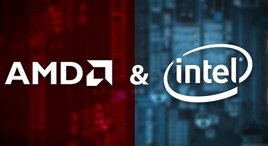
Desktop/Workstation Sockets
Estes grupo de Sockets AMD é destinado aos Desktop's.
Todos os
sockets apresentados na tabela asseguir são todos os sockets AMD
para desktops desde de 2000-2022.
| Name (a.k.a.) | Year | Type | Contacts | x86 CPU Family | MC | I/O lanes | APU | FCH | Package |
|---|---|---|---|---|---|---|---|---|---|
| Super Socket 7 | 1998 | PGA | 321 | 5 | - | FSB | ✘ | - |
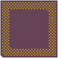 |
| Slot A | 1999 | SEC | 242 | 6 | - | FSB | ✘ | - | - |
| Socket A | 2000 | PGA | 462 | 6 | - | FSB | ✘ | - |
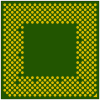 |
| Socket 563 | 2003 | PGA | 563 | 6 | - | FSB | ✘ | - |
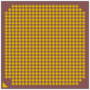 |
| Socket 754 | 2003 | PGA | 754 | 0Fh | 72 bit DDR | 16 HT1 | ✘ | - |
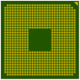 |
| Socket 940 | 2003 | PGA | 940 | 0Fh | 144 bit DDR | 3 × 16 HT1 | ✘ | - |
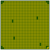 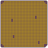 |
| Socket 939 | 2004 | PGA | 939 | 0Fh | 144 bit DDR | 16 HT1 | ✘ | - |
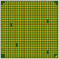 |
| Socket AM2 | 2006 | PGA | 940 | NPT 0Fh | 144 bit DDR2 | 16 HT1 | ✘ | - |
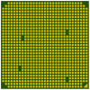 |
| Socket Fr3 | 2006 | LGA | 1207 | NPT 0Fh | 2 × 72 bit DDR2 | 3 × 16 HT1 | ✘ | - |

|
| Socket AM2+ (AM2r2) | 2007 | PGA | 940 | 10h | 2 × 72 bit DDR2 | 16 HT3 | ✘ | - |

|
| Socket AM3 | 2009 | PGA | 938 | 10h | 2 × 72 bit DDR2/3 | 16 HT3 | ✘ | - |
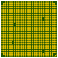 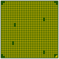 |
| Socket FM1 | 2011 | PGA | 905 | 12h | 2 × 72 bit DDR3 | 16 + 4 PCIe2 | ✔ | 4 PCIe2 |
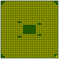 |
| Socket AM3+ (AM3b) | 2012 | PGA | 941 | 15h | 2 × 72 bit DDR3 | 16 HT3 | ✘ | - |
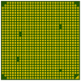 |
| Socket FM2 | 2012 | PGA | 904 | 15h | 2 × 64 bit DDR3 | 16 + 4 PCIe2 | ✔ | 4 PCIe2 |
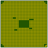 |
| Socket AM1 (FS1b) | 2014 | PGA | 721 | 16h | 72 bit DDR3 | 4 + 4 PCIe2 | ✔ | integrated |
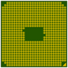 |
| Socket FM2+ (FM2b, FM2r2) | 2014 | PGA | 906 | 15h | 2 × 64 bit DDR3 | 16 + 4 PCIe2/3 | ✔ | 4 PCIe2 | |
| Socket AM4 | 2016 | PGA | 1331 | 15h, 17h, 19h | 2 × 72 bit DDR3/4 | 16 + 4 PCIe3/4 | ✔ | 4 PCIe3/4 |
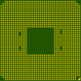 |
| Socket TR4 (SP3r2) | 2017 | LGA | 4094 | 17h | 4 × 72 bit DDR4 | 4 × 16 PCIe3 | ✘ | - |
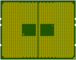 |
| Socket sTRX4 | 2019 | LGA | 4094 | 17h | 4 × 72 bit DDR4 | 4 × 16 PCIe4 | ✘ | - |

|
| Socket sWRX8 | 2020 | LGA | 4094 | 17h, 19h | 8 × 72 bit DDR4 | 8 × 16 PCIe4 | ✘ | - |

|
| Socket AM5 | 2022 | LGA | 1718 | 19h | 2 × 72 bit DDR5 | 16 + 4 + 4 PCIe4/5 | ✔ | 4 PCIe4/5 |
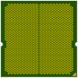 |
Fonte: wikichip
Server Sockets
Estes grupo de Sockets AMD é destinado aos Server's.
Todos os
sockets apresentados na tabela asseguir são todos os sockets AMD
para servidores desde de 2000-2022.
| Name | Year | Type | Contacts | Fam. | MC | I/O lanes | APU | SCH | Package |
|---|---|---|---|---|---|---|---|---|---|
| Socket 940 | 2003 | PGA | 940 | 0Fh | 144 bit DDR | 3 × 16 HT1 | ✘ | - |


|
| Socket F | 2006 | LGA | 1207 | NPT 0Fh | 2 × 72 bit DDR2 | 3 × 16 HT1 | ✘ | - |

|
| Socket Fr2 | 2007 | LGA | 1207 | NPT 0Fh, 10h | 2 × 72 bit DDR2 | 3 × 16 HT1 | ✘ | - |

|
| Socket Fr5 | 2008 | LGA | 1207 | NPT 0Fh, 10h | 2 × 72 bit DDR2 | 3 × 16 HT1/3 | ✘ | - |

|
| Socket Fr6 | 2009 | LGA | 1207 | 10h | 2 × 72 bit DDR2 | 3 × 16 HT3 | ✘ | - |
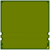 |
| Socket C32 | 2010 | LGA | 1207 | 10h, 15h | 2 × 72 bit DDR3 | 3 × 16 HT3 | ✘ | - |
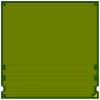 |
| Socket G34 | 2010 | LGA | 1944 | 10h, 15h | 4 × 72 bit DDR3 | 3 × 16 + 2 × 8 HT3 | ✘ | - |
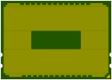 |
| Socket SP3 | 2017 | LGA | 4094 | 17h, 19h | 8 × 72 bit DDR4 | 8 × 16 PCIe3/4 | ✘ | integrated |

|
| Socket SP5 | 2022 | LGA | 6096 | 19h | 12 × 80 bit DDR5 | 8 × 16 PCIe5 | ✘ | integrated |
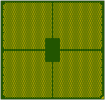 |
Fonte: wikichip